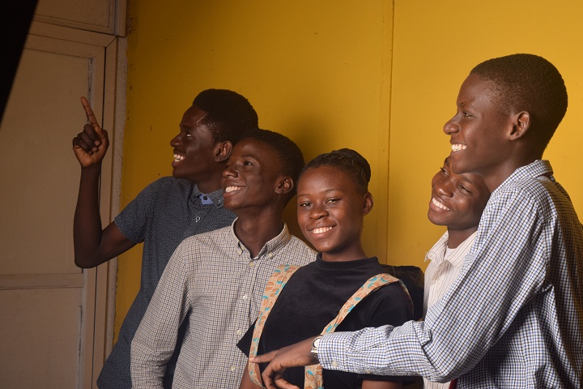

-
The DesignIT Africa Story
Why?
How?
To what end?What is the essence of a school without tech facilities to aid learning in the 21st century? How will students in secondary school thrive outside of school in this fast changing century? What does the future look like and how well are study areas helping the young people of today prepare for it? These were the questions bubbling in the mind of young Alli Ajagbe – a tech enthusiast studying at Methodist Grammar School Bodija Ibadan.
Students were approaching the ending days of their secondary school and were gradually preparing for their final examinations. These were defining moments for the students as failure to pass these terminal exams could result in the obstruction of the smooth flow of their education. One of these exams was the popular Joint Admission Matriculation Board (JAMB) – a computer-based test which robbed every student’s peace of mind. The only computer in the school served as an aesthetic in the principal’s office to be observed by the students from the window. This is to say that; the school did not have the adequate resources to prepare its students for certain exams like Jamb. Hence, when students fail, they do so because they have never carried out an activity on a computer before rather than not knowing the right answer to the questions they are being asked. It then became evident that there is a strong need for students to acquire basic tech know-how right from the days of their secondary school.

The baseline solution was to provide an opportunity for students to have access to computer systems, so that they can adequately prepare for examinations like JAMB. But this was not the end point. When students graduate, there is still a need to acquire skills that are needed to thrive in the 21st century. Hence, we wanted to build an organization that provides the basic access to learn about technology. Based on this, DesignIT Africa was born into existence.
Our founder pitched the DesignIT Africa idea at the Beyond School Community Challenge organized by Mandela Washington Fellows Alumni Association of Nigeria (MWFAAN) after being recognized as one of the top ten most innovative ideas in the country. From this opportunity, enough capital was gained to launch the organization in 2018. Although there was a major setback then as invited potential investors did not honor the launching by their presence, the organization utilized its partnership with NGOs like Sozo Networks, Eagle’s Orbit and Jumpstart Academy to host its first training cohort.

The DesignIT Africa impact plan is in three phases. The first phase being the Recruitment phase to identify those that are really passionate about technology and its opportunities it affords us. The second phase is the Training phase where selected scholars are trained on Coding, Graphic Design and Digital Marketing. These skills are coupled with leadership and entrepreneurship skills so that our scholars can utilize their tech skills for community development. The last phase is then the Empowerment phase where our scholars either intern at other organizations or start up their own companies to practicalize what they learned at the academy.
Inspired by the success of our first cohort, DesignIT Africa has gone further to partner with Teens World Empowerment, Save A Girl Africa (SAGA) and PreciousArt Initiative further expand our scope of impact. Since inception, DesignIT Africa has been able to impact over 500 scholars and finalized partnerships with over 15 organizations. To us at DesignIT Africa, impact is only made when someone else is empowered enough to replicate the impact. Hence, we aim to give the average teenager the space and opportunity to harness their tech skills for social impact.